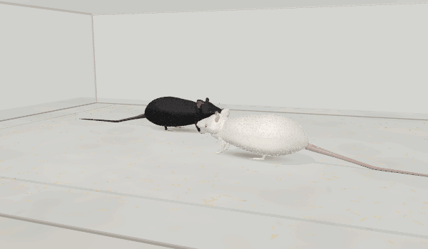
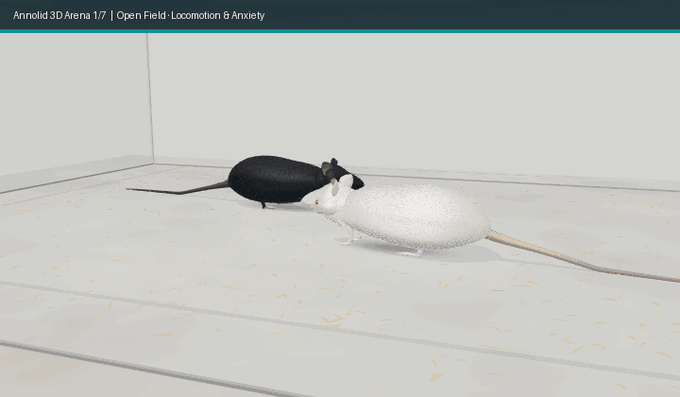
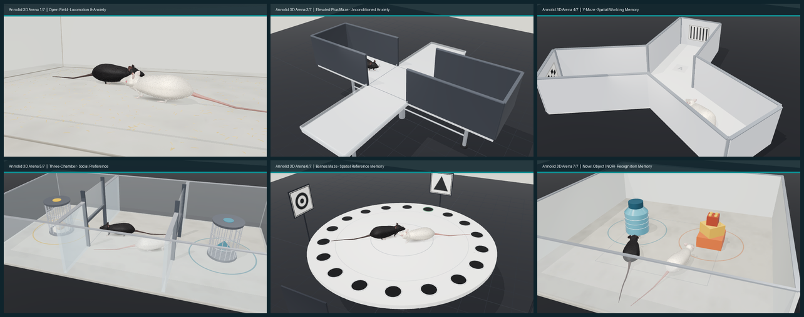
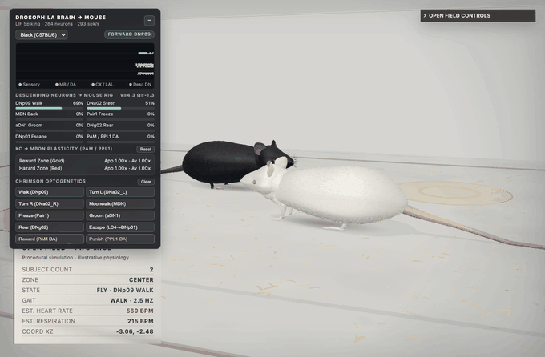
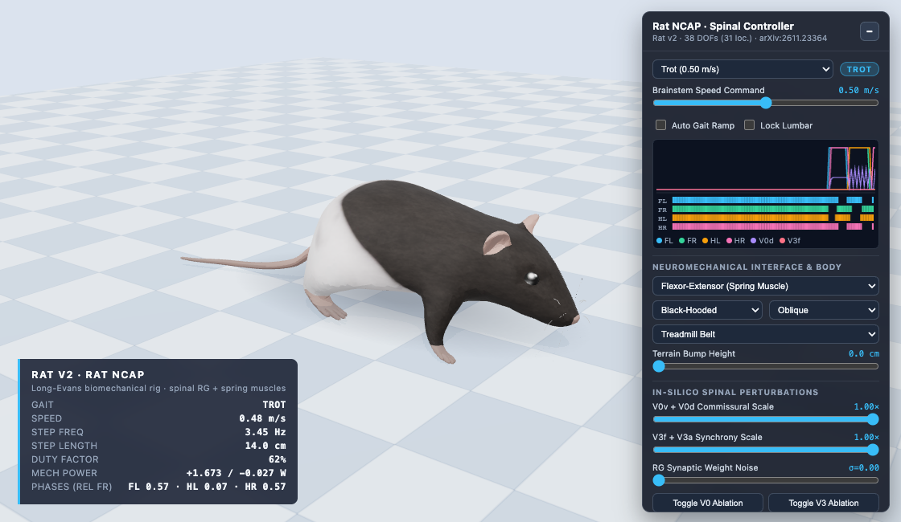
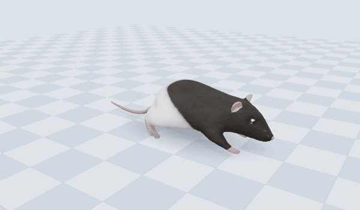

3D Digital Animal Twins & Sim-to-Real Studio#
Annolid ships 100% offline Three.js 3D digital animal simulations and an end-to-end Sim-to-Real Studio (annolid-run sim2real) so you can:
visualize and test 10 classic neuroscience behavioral arenas offline (no external CDN required),
generate pixel-accurate ground-truth 13-keypoint pose and hierarchical body-part masks to benchmark trackers under controlled occlusions,
explore mechanistic neural circuit controllers (Drosophila LIF spiking connectomes with optogenetics & Mushroom Body plasticity, and Rat NCAP spinal CPG locomotion), and
bootstrap custom YOLO / DINO KPSEG / Keypoint R-CNN models from raw lab videos with zero manual labeling.
1. Two-Mouse 3D Behavioral Arenas#
Open Three.js Examples → Two Mice in the Annolid GUI — or tell Annolid Bot open threejs example two mice.

Fig. 53 Live offline Three.js 3D simulation featuring a procedural black C57BL/6 mouse and white BALB/c mouse with layered fur, whiskers, articulated gait cycles, wall-following, and social investigation.#
Switch live among 10 classic neuroscience arenas from Simulation Controls → Arena (or via ?arena=<id>):
Arena ( |
Behavioral Domain |
Key Apparatus Features |
|---|---|---|
|
Locomotion & anxiety |
Matte anti-glare open field with aspen shavings (default) |
|
Social & ethology |
Shoebox cage with bedding, nestlet, and water port |
|
Locomotion & anxiety |
Cylindrical drum with center / middle / periphery rings |
|
Unconditioned anxiety |
Elevated |
|
Working memory & choice |
120° alternation Y-maze and T-maze with choice point & reward wells |
|
Social preference |
Crawley three-chamber box with doorways & wire holding cups |
|
Photophobia & anxiety |
Bright light compartment + smoked dark canopy compartment |
|
Spatial memory |
Elevated circular table with 18 perimeter escape holes |
|
Recognition memory |
Familiar bottle vs. novel geometric block tower |
Interactive Tour of Annolid’s 3D Neuroscience Arenas#

Fig. 54 Animated tour of Annolid’s bundled offline 3D behavioral arenas — switch arenas live from Simulation Controls → Arena or via ?arena=<id>.#

Fig. 55 Side-by-side overview of six built-in 3D neuroscience apparatus scenes with exact wall, cliff, and doorway collision physics.#
Overhead 13-Keypoint Pose & Hierarchical Body-Part Benchmarks#
Enable Show Pose Skeleton and switch to Top down camera — or run the deterministic dataset generator (python scripts/generate_two_mice_pose_dataset.py) — to export reproducible 13-keypoint COCO / YOLO pose datasets and body-part segmentation benchmarks:


2. Drosophila LIF Connectome Mode & FlyBody 3D#
Launch two_mice.html?fly_brain=1 (or open the Fly-Brain Connectome example) to drive the 3D rig with a live Leaky Integrate-and-Fire (LIF) spiking connectome — complete with real-time spike raster, descending neuron activity bars (DNp09 walk, DNa02 steer, MDN moonwalk, Pair1 freeze, aDN1 groom), Chrimson optogenetic triggers, and PAM/PPL1 dopaminergic Mushroom Body plasticity:


Fig. 58 Live LIF spiking connectome animation showing descending neuron bars and Chrimson optogenetic transitions (DNp09 walk → MDN moonwalk) driving the 3D mouse rig.#
3. Rat NCAP 3D Biomechanical & Spinal Circuit Twin#
Open View → 3D Examples → Rat NCAP 3D Simulation to launch Annolid’s bundled 41-bone skinned Long-Evans Rat v2 model driven by the Rat NCAP (Neural Circuit Architectural Priors) spinal cord controller (stand → walk → trot → bound), with live spinal oscilloscope traces, Hildebrand footfall diagrams, and in-silico commissural (V0v+V0d) / synchrony (V3f+V3a) ablation controls:


Fig. 61 The Rat NCAP 3D viewer combines the 41-bone skinned Rat v2 rig with live spinal CPG traces and interactive gait/ablation controls.#


Fig. 62 Deterministic 3D Rat NCAP trotting rollout ready for 16-keypoint Sim-to-Real pose export or real-to-sim 31-DOF inverse kinematics fitting.#
4. Sim-to-Real Studio: Raw Videos → 3D Twin → Trained Model#
Need a custom pose or body-part segmentation model for your own lab videos without spending days labeling frames by hand? Sim-to-Real Studio (AI & Models → Sim-to-Real Studio (3D Sim → Colab)… or /sim2real in Annolid Bot) automates the full loop:
Sample & analyze your real videos: Automatically infers species (
mouse,rat, orfly), lighting/IR profile, arena geometry, coat colors, body scale, blur/noise statistics, and extracts clean per-video median backgrounds.Generate an environment-matched 3D dataset: Composites photoreal 3D subjects onto your real arena backgrounds with soft contact shadows and exports synchronized YOLO-Seg, YOLO-Pose (
mouse13,calms7,topdown6, or Rat v2 16-point), and COCO Keypoints datasets.Train & iterate on Colab or locally: Fine-tunes YOLO, DINOv3 KPSEG, or Keypoint R-CNN, evaluates back on clips from your real videos, and outputs a self-contained
sim2real_report.htmlwith metric curves and visual contact sheets.
Quick CLI Recipes#
# 1. Sample real mouse recordings and configure a 13-keypoint pose Sim-to-Real project
annolid-run sim2real sample \
--video /path/to/lab_recording_1.mp4 \
--video /path/to/lab_recording_2.mp4 \
--project ./sim2real_mouse_pose \
--species mouse \
--task yolo_pose \
--pose-schema mouse13 \
--sampling-strategy diverse \
--samples-per-video 24
# 2. Generate environment-matched 3D frames composited onto your real arena background
annolid-run sim2real generate \
--project ./sim2real_mouse_pose \
--composite-bg \
--frames-per-scenario 24
# 3. Train and iteratively evaluate on Google Colab T4 GPU (or --train-backend local)
annolid-run sim2real iterate \
--project ./sim2real_mouse_pose \
--model yolo \
--iterations 2 \
--train-backend colab \
--gpu T4 \
--epochs 30
Tip
Want deeper technical specs? Explore the full reference guides on the Annolid Docs Portal: Two-Mouse 3D Simulation · Rat NCAP 3D Simulation · FlyBody 3D · Digital Animal Neurocontrol · Sim-to-Real Studio.